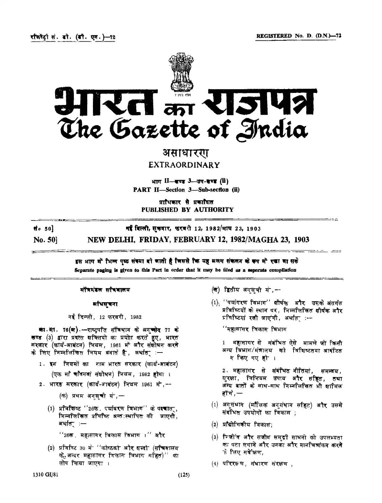
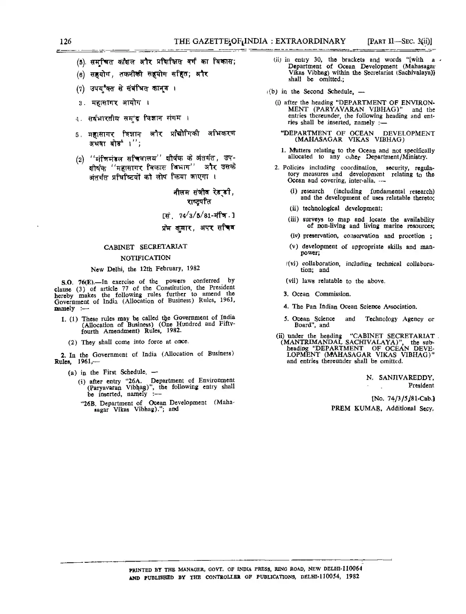

Amendment #154 (S.O. 76(E), 1982)
4 changes: 2 to the First Schedule, 2 to the Second Schedule. 4 applied
What it did to the ministries
- spun offDepartment of Ocean Development is separated from Cabinet Secretariat (5 subjects) change 1, 2, 3, 4 · histories: Cabinet Secretariat, Earth Sciences
The order, page by page
Page 1 of 2

Page 2 of 2

1234after Schedule 1 › entry 26A
- 26B. Department of Ocean Development
applied at schedule 1 › department 26B in the Rules after #154
new text differs
Schedule 1 › entry 30
applied at schedule 1 › department 30 in the Rules after #154
after Schedule 2 › DEPARTMENT OF ENVIRON- MENT
- DEPARTMENT OF OCEAN DEVELOPMENT
- 1. Matters relating to the Ocean and not specifically allocated to any other Department/Ministry.
- 2. Policies including coordination, security, regulatory measures and development relating to the Ocean and covering, inter-alia, --- (1) research (including fundamental research) and the development of uses relatable thereto
- ii. technological development
- iii. surveys to map and locate the availability of non-living and living marine resources
- iv. preservation, conservation and procetion
and 5 more
- v. development of appropriate skills and manpower ((vi) collaboration, including technical collaboration; and
- vii. laws relatable to the above.
- 3. Ocean Commission.
- 4. The Pan Indian Ocean Science Association.
- 5. Ocean Science and Technology Agency or Board
applied at schedule 2 › department DEPARTMENT OF OCEAN DEVELOPMENT in the Rules after #154
Schedule 2 › CABINET SECRETARIAT. › DEPARTMENT OF OCEAN DEVE- LOPMENT
applied at schedule 2 › ministry CABINET SECRETARIAT › department in the Rules after #154
How this document was read
From the Government of India (Allocation of Business) Rules, 1961 and their amendments, as published by the Cabinet Secretariat (cabsec.gov.in), read by orgpedia. The readings of the older scanned gazettes have known gaps.